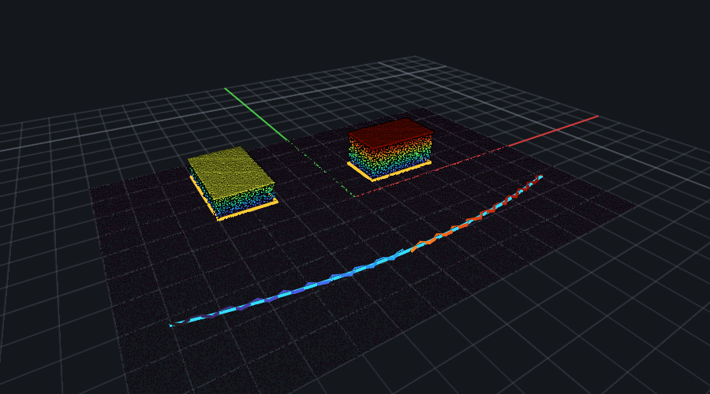

Maps and coordinate frames
Survey data, GIS layers and GNSS tracks come in global coordinates: longitude and latitude, or projected eastings and northings in the hundreds of thousands of metres. GPUs work in 32-bit floats, which at those magnitudes only resolve centimetres or worse. SpatialRender therefore moves everything into a local frame near the origin, in 64-bit precision, before anything reaches the GPU. This tutorial shows how to put different sources into the same frame.
The two kinds of frame
ENUFrame(lat, lon, h): a local East-North-Up tangent plane at a geodetic origin. Input coordinates are(lon, lat[, height]), the order GeoJSON uses.OffsetFrame(x, y, z): for data that is already projected (UTM, state plane, most LAS files); it subtracts the origin.
using SpatialRender
enu = ENUFrame(47.3769, 8.5417) # Zürich main station
to_local(enu, (8.5417, 47.3769)) # the origin itself3-element StaticArraysCore.SVector{3, Float64} with indices SOneTo(3):
0.0
0.0
0.0to_local(enu, (8.5427, 47.3769)) # 0.001° further east ≈ 75 m3-element StaticArraysCore.SVector{3, Float64} with indices SOneTo(3):
75.51950648804123
0.00048493109123704187
-0.00044627795799469624to_world(enu, Vec3d(100, 50, 0)) # back to (lon, lat, height)3-element StaticArraysCore.SVector{3, Float64} with indices SOneTo(3):
8.543024172454446
47.377349720828114
0.0009787380695343018GIS layers
load_geojson turns lines and polygon rings into a line layer and points into markers. We write a small file with two building outlines and a route, as a GIS export would.
lon(e) = 8.5417 + e / (111_320 * cosd(47.3769)) # metres east → longitude
lat(n) = 47.3769 + n / 111_150 # metres north → latitude
ring(e0, n0, w, h) = [[lon(e0), lat(n0)], [lon(e0 + w), lat(n0)], [lon(e0 + w), lat(n0 + h)],
[lon(e0), lat(n0 + h)], [lon(e0), lat(n0)]]
route = [[lon(e), lat(0.002e^2 - 30)] for e in -60:5:60]
write("site.geojson", """
{"type": "FeatureCollection", "features": [
{"type": "Feature", "properties": {"stroke": "#ffcc33"},
"geometry": {"type": "Polygon", "coordinates": [$(ring(10, 5, 25, 15))]}},
{"type": "Feature", "properties": {"stroke": "#ffcc33"},
"geometry": {"type": "Polygon", "coordinates": [$(ring(-40, 10, 18, 30))]}},
{"type": "Feature", "properties": {"stroke": "#33ddff"},
"geometry": {"type": "LineString", "coordinates": $(route)}}
]}""")
lines, markers, frame = load_geojson("site.geojson"; frame = enu, width = 3, height = 0.3)
length(lines.polylines)3height = 0.3 lifts the 2-D outlines 30 cm above the ground, so they stay visible over the point cloud. When frame is not given, load_geojson creates an ENUFrame at the centre of the data. load! goes one step further: the first georeferenced file loaded into an empty scene sets the scene's frame, and every later file is placed in it.
Adding a GNSS track
trajectory accepts (lon, lat, height) fixes when given an ENUFrame. Fixes recorded with gaps can be broken with max_gap (in the units of times) so the gap isn't drawn as a straight jump.
fixes = [(lon(e), lat(0.002e^2 - 30 + 0.8sin(e)), 0.5) for e in -60:2.0:60]
times = collect(1.0:length(fixes)); times[30:end] .+= 60 # a one-minute outage
track = trajectory(fixes; frame = enu, times, max_gap = 5, width = 3, name = "gnss")
length(track.polylines) # segments, without the jump across the outage59Putting it together
The outlines, the route and the GNSS track share the ENU frame, so they line up. A point cloud in the same frame (here a synthetic scan of the two buildings) completes the picture.
using Random
rng = Xoshiro(3)
pts = Vec3f[]
for (e0, n0, w, h, height) in ((10, 5, 25, 15, 12), (-40, 10, 18, 30, 7)), _ in 1:15_000
x, y = e0 + w * rand(rng), n0 + h * rand(rng)
push!(pts, Vec3f(x, y, rand(rng) < 0.5 ? height : height * rand(rng)))
end
append!(pts, [Vec3f(140rand(rng) - 70, 100rand(rng) - 50, 0.02randn(rng)) for _ in 1:60_000])
scene = Scene(frame = enu)
add!(scene, PointCloud(pts; name = "scan"), lines, track)
snapshot(scene; width = 900, height = 500,
camera = Camera(position = Vec3d(-60, -95, 70), target = Vec3d(0, 0, 0)))
Building outlines, route and GNSS track over a scan, all in one ENU frame
Projected data
LAS files and many GIS exports are in projected coordinates. Use an OffsetFrame for those, and pass the same frame to every loader:
pc, frame = load_las("survey.las") # frame: OffsetFrame at the file centre
lines, _, _ = load_geojson("parcels_wgs84.geojson") # lon/lat: needs its own ENU frameThere is no map-projection library in SpatialRender, so lon/lat layers and projected layers can't be combined automatically. Either reproject the GIS layer to the survey's projection (and load it with the same OffsetFrame), or use the GeoInterface extension with GeoDataFrames, which can reproject while loading.
Next: Live robot data.